install.packages("devtools")
install.packages("roxygen2")R package workshop
Welcome! In this session we will get our hands dirty with some coding in R. The aim of this session is to empower you with skills to that make you able to build a (basic) R package. In order to achieve that, this tutorial is a step-by-step guide. The material is inspired by the tutorial published by Brad Duthie (see here) which is part of the Coding Club. We like to thank Brad and the Coding Club for providing his work open source for reuse.
Let’s get started!
Do you want to go fast?
Go alone!
Do you want to go far?
Work together!
The saying is true, and especially with coding. However, the aim of developing a package is that your code is used by others. Therefore, we really recommend you to work together. In the end your code is more often read than written and you better make sure that your logic is also understood by others. So please, if you have not found a partner in crime at this stage, search for a buddy. Let’s us know if you need help.
Making a new R project
To get started with an R packages including documentation, it is best to create a new R project. To do this first open Rstudio. In Rstudio, go to File > New Project...; the box below should show up.
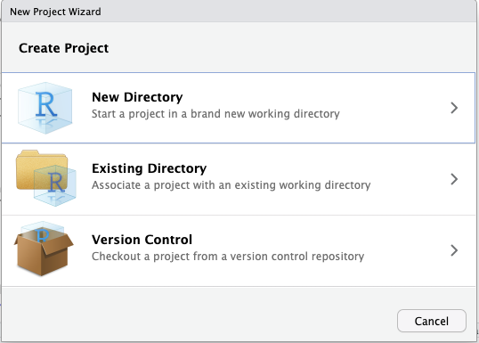
Select the option New Directory. The following box should appear.
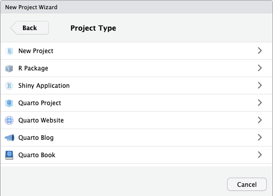
Select the option New Project 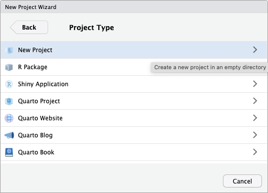
Now give your directory a name and Browse on your computer for a good place for this R package to live. And click on Create Project.
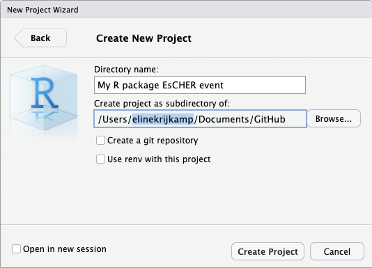
You will now find this folder and R project on the location you set the directory. Quite likely, the project did even open in R studio. You will notice this by having the Directory Name in your right top corner of R studio.
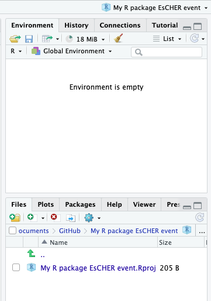
Within the folder, the R project is shown as a file ending with .Rproj .
Extra information
There is also a hidden file, likely called .Rproj.user. You will not see it unless you ask your computer to show it. On a Mac you can see this by going to the folder and click “Command + shift + . (period key)”. The* folder .Rproj.user is not really important; it stores some more meta-data about the package development.
Install required packages
Before we begin, we need to install the devtools and roxygen2 packages. Devtools includes a comprehensive set of tools essential for package development, and roxygen2 facilitates the creation of documentation.
You might need to restart Rstudio after installing the above packages.
Why are we making an R package? What is it?
Packages in R are collections of code and data created by members of the R community. They have a variety of purposes, ranging from comprehensive and widely used statistical libraries to simpler packages containing functions for knock-knock jokes (really, no joke).
If you have been using R for any amount of time, you likely have had to install and utilize functions from an R package. In these notes, we will guide you through the fundamentals of creating your own R package. This process will not only be useful if you plan to develop your own code into a package but will also enhance your understanding of the R packages you employ in your research and how they are constructed.
Many R users are familiar with the (Comprehensive R Archive Network CRAN), which is a vast repository hosting over 13,000 published R packages. These packages are made available to the R community and can be installed in RStudio using the install.packages function. However, not every R package needs to be or should be uploaded to CRAN. Packages can also be uploaded to and downloaded from GitHub, or even constructed for personal use—many researchers maintain personal R packages with documented functions they regularly utilize in their research.
In this tutorial, we will take you through the steps to write a simple R package, explain how you can upload it to GitHub, and download it from GitHub. We will focus exclusively on package development in RStudio for simplicity and efficiency, although it is also possible to develop packages using the command line.
The most basic R package
This would be a scenario where you would like to include two functions. The first function is to convert temperatures from degrees Fahrenheit to degrees Celsius, while the second function will convert temperatures from degrees Celsius to degrees Fahrenheit.
The first thing we need to do is to create an new folder inside of our R package repository called R.
In R studio, you can click on the button New Folder.
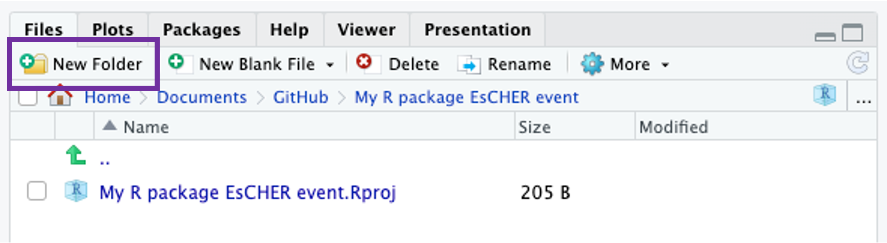
The following box shows up. 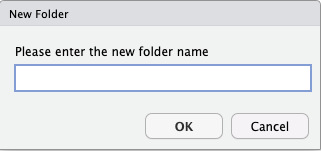
Now name the folder R and click oke.
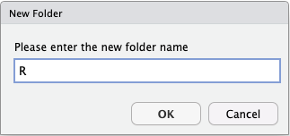
In R studio you now see the folder.
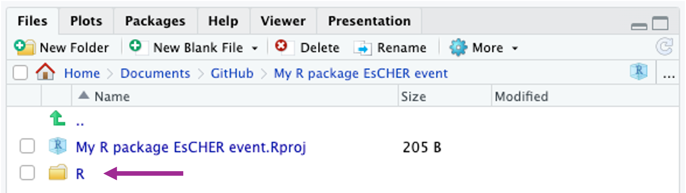
Next, we have to add an R script. You can click File > New File > R script.
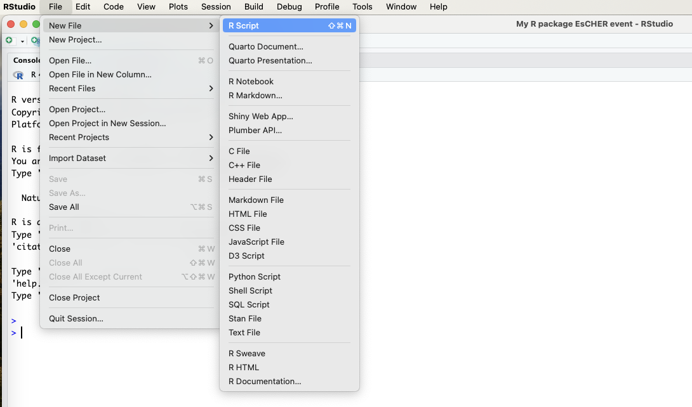
A file called Untitled1 opens. Click on the save button and give the R script a name.
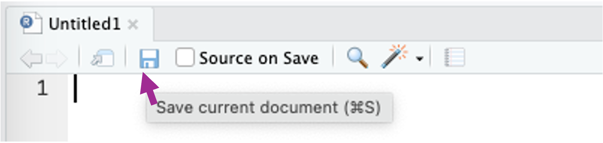
Give your R script a name, select the R folder as the location for the file and click Save. This R folder is the folder where you will store actual R scripts with the coded functions.
[@Gianluca or do you recommend different?
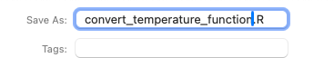
In your R repository environment you should now see the file within the R folder.
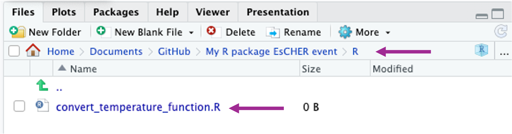
Within this folder you can save as many R scripts, .R files, as you like. And each of these .R. files can have as any functions you want. You could, for example, give each function its own file, but for large projects, you might like to group similar functions in the same R file.
In our R package, we will write both functions in the same file called ‘convert_temperature_function.R’. Paste the code from below in the file and click save.
convert_Fahrenheid_to_Celsius <- function(F_temp){
C_temp <- (F_temp - 32) * 5/9;
return(C_temp);
}
convert_Celsius_to_Fahrenheid <- function(C_temp){
F_temp <- (C_temp * 9/5) + 32;
return(F_temp);
}Coding conventions
Coding conventions in R are essential for maintaining readable, efficient, and consistent code across projects. One well-known standard is the Google’s R Style Guide, which emphasizes clarity and simplicity with rules on naming conventions, syntax, and data structure usage. Similarly, the Tidyverse style guide, used primarily for packages within the Tidyverse collection, focuses on making R code easy to write, read, and maintain, highlighting functional programming and data manipulation tasks. Another example is the Decision Analysis in R for Technologies in Health, DARTH framework, which provides guidelines for naming conventions of health economic models.
Overall, all these guides aim to facilitate the sharing and readability of code. This is key when building a package which will be used by others. Therefore, we like to stress to use good coding practices along the way.
Continue building the package
Next, we need to create a new file named DESCRIPTION in the escher_package_workshop directory. It is important to place this file directly in the main directory, not within the R subfolder. This file will be a plain text document without any file extension and will contain metadata about the R package. Initially, this file will include just four lines of code that specify the package name, type, title, and version number.
First go back to the main folder (in other words, leave the R folder.
Click on Black File > Text File > name the file DESCRIPTION and click OK
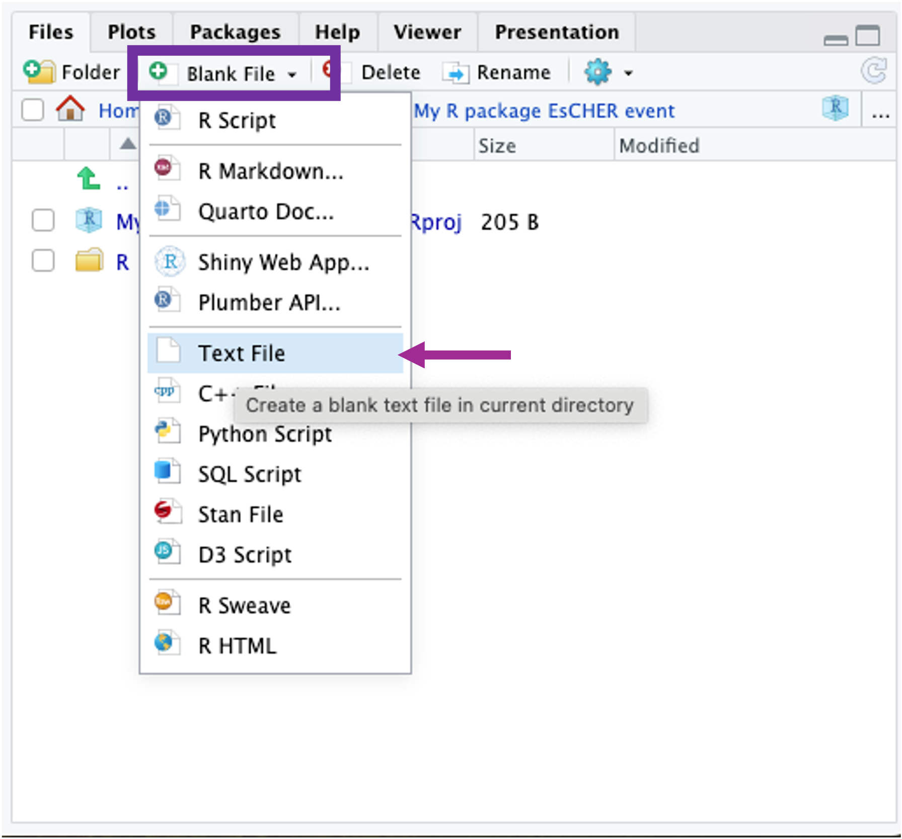
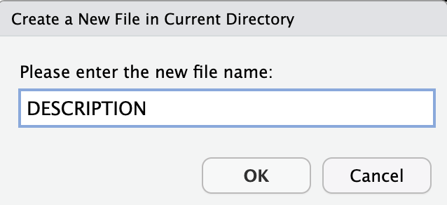
Copy the following text to the DESCRIPTION.txt file and click save
Package: My R package EsCHER
Type: Package
Title: Temperature Conversion Package for Demonstration
Version: 0.0.1.0
RoxygenNote: 7.3.1
Encoding: UTF-8At this state, we could call the current code a package. We could load it using the code below after first making sure we activated devtools.
library(devtools)
load_all(".")
# Working directory should be in the package escher package workshop,
# if you followed the settings with the project this should run.After you ran this code, the fucntions we coded before are now read into R and we can use them to convert temperatures. Please try it out running to following code.
convert_Fahrenheid_to_Celsius(F_temp = 79)convert_Celsius_to_Fahrenheid(C_temp = 29)Although we made a basic packages, this is not a good point to stop for writing a package, because we really should included some sort of documentation in which we explain where this package is design fro and how users should use the functions. In other words, we need to provide guidance on how to use the it.
Adding documentation
If we want others to use the functions that we have written, we need to provide some documentation for them. Documentation shows up in the ‘Help’ tab of RStudio when running the function help. You can run the following code to see what I mean.
help(lm)The code above, is the same as running.
?lmIn the help tab from RStudio you know see the R Documentation about Fitting Linear Models a function that is part of the stats package.
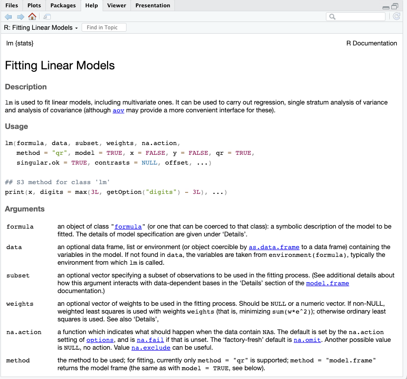
These helpful markdown files can be made in Rstudio using the roxygen2 package. To do this, you need to add to add extra notation to the functions written in the convert_temperature_function.R file. The code below shows a simple example.
#' Fahrenheit conversion
#'
#' Convert degrees Fahrenheit temperatures to degrees Celsius
#' @param F_temp The temperature in degrees Fahrenheit
#' @return The temperature in degrees Celsius
#' @examples
#' temp1 <- F_to_C(50);
#' temp2 <- F_to_C( c(50, 63, 23) );
#' @export
convert_Fahrenheid_to_Celsius <- function(F_temp){
C_temp <- (F_temp - 32) * 5/9;
return(C_temp);
}#' Celsius conversion
#'
#' Convert degrees Celsius temperatures to degrees Fahrenheit
#' @param C_temp The temperature in degrees Celsius
#' @return The temperature in degrees Fahrenheit
#' @examples
#' temp1 <- C_to_F(22);
#' temp2 <- C_to_F( c(-2, 12, 23) );
#' @export
convert_Celsius_to_Fahrenheid <- function(C_temp){
F_temp <- (C_temp * 9/5) + 32;
return(F_temp);
}It is important to note that the length of the code has significantly increased due to the addition of documentation. However, this provides useful reminders on how to use each function. For example, the first line, such as #' Fahrenheit conversion, indicates the function’s title, while the following line provides a description. Additional tags like @param and @examples are utilized to structure different sections of the help file. These are just a few of the available tags; for a more comprehensive understanding of the Roxygen format, you can visit Karl Broman’s page or Hadley Wickham’s “Get started with roxygen” via this link.
By using this format, the roxygen2 package simplifies the creation of help files in markdown. To proceed, ensure that the project is open and the working directory is correctly set (using getwd() should return the directory of your R package).
Then, run the following command in the console.
library(roxygen2) # Read in the roxygen2 R package
roxygenise() # Builds the help filesroxygenise is the workhorse function that uses roclets, the built-in document transformation functions, to build all documentation for a package. For more information, you can read the documentation in the roxygen2 package.
Here is how our package directory looks like now.
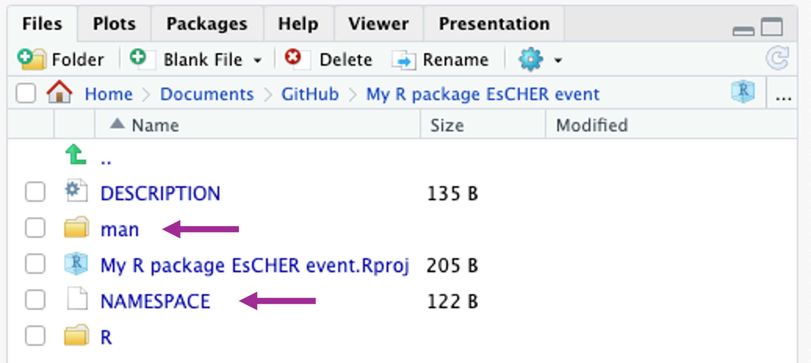
Note that two things have been added to the directory. The first is a new folder called man, which holds the help files that we have written. The second is a plain text file NAMESPACE, which works with R to integrate them into the package correctly; you do not need to edit NAMESPACE manually, in fact, the file itself tells you not to edit it. This is what the file contains.
# Generated by roxygen2: do not edit by hand
export(convert_Celsius_to_Fahrenheid)
export(convert_Fahrenheid_to_Celsius)Inside the man folder, there are two new markdown documents, one for each function. 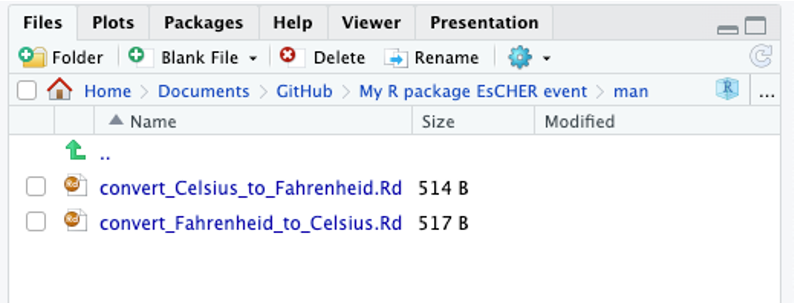
Both are plain text files. Here are the contents of convert_Celsius_to_Fahrenheid.Rd.
% Generated by roxygen2: do not edit by hand
% Please edit documentation in R/convert_temperature_function.R
\name{convert_Celsius_to_Fahrenheid}
\alias{convert_Celsius_to_Fahrenheid}
\title{Celsius conversion}
\usage{
convert_Celsius_to_Fahrenheid(C_temp)
}
\arguments{
\item{C_temp}{The temperature in degrees Celsius}
}
\value{
The temperature in degrees Fahrenheit
}
\description{
Convert degrees Celsius temperatures to degrees Fahrenheit
}
\examples{
temp1 <- C_to_F(22);
temp2 <- C_to_F( c(-2, 12, 23) );
}We can now see if it works and ask for help with the convert_Celsius_to_Fahrenheid function.
?convert_Celsius_to_FahrenheidRstudio will present the following in the Help tab. 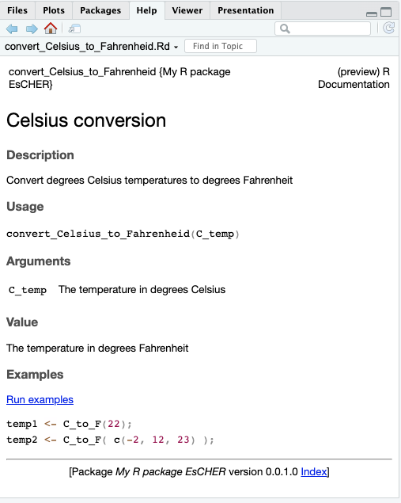
Now that we have the key functions and documentation, we can upload this to GitHub for the world to see and use.
Uploading to and install from GitHub.
Note that putting the R package on GitHub is not a requirement, but it is probably the easiest way to share your work.
EsCHER workshop: if you are experiences with GitHub or your working computer restricts you from using it, you can also share your package via a .zipfile. Please read the section below about those instructions.
Develop your own package
You now have the basis knowledge to develop a package. Ready to develop your own? For now, you might like to start small, and just add one or two extra functions to the package you have already created.
Peer review
Peer review is crucial for R packages because it ensures the quality and reliability of the code by having experts scrutinize the functionality and design before public release. This process helps identify and rectify errors, improve code efficiency, and enhance usability, which might otherwise be missed by the programmers. Peer review can also be useful to get feedback on coding standards and best practices and to robustness and maintainability of the package. While CRAN always requires this rigorous review process, it is also highly recommended to let your code be reviewed when hosted on GitHub. Therefore, we like you to practice this with our group and give and provide some feedback.